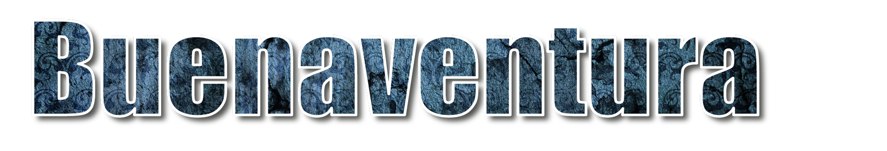
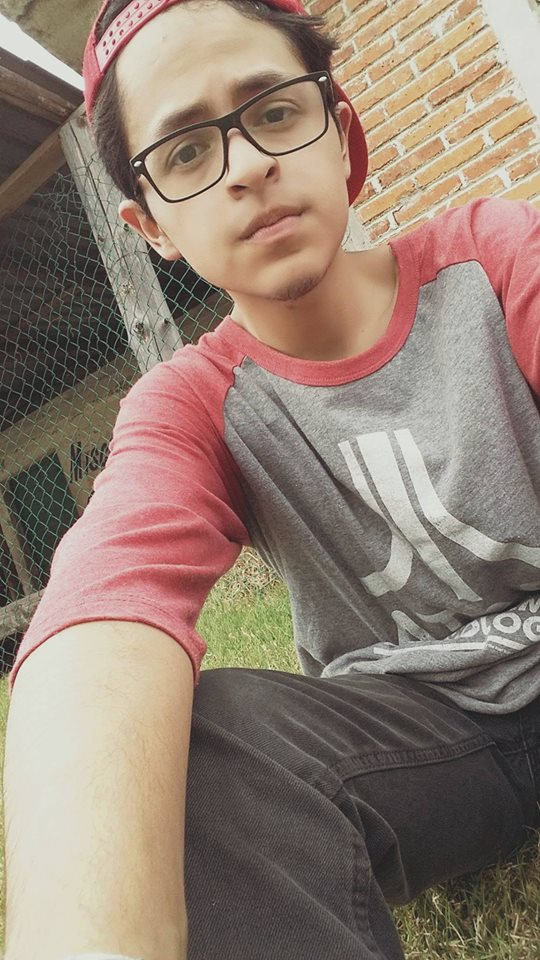
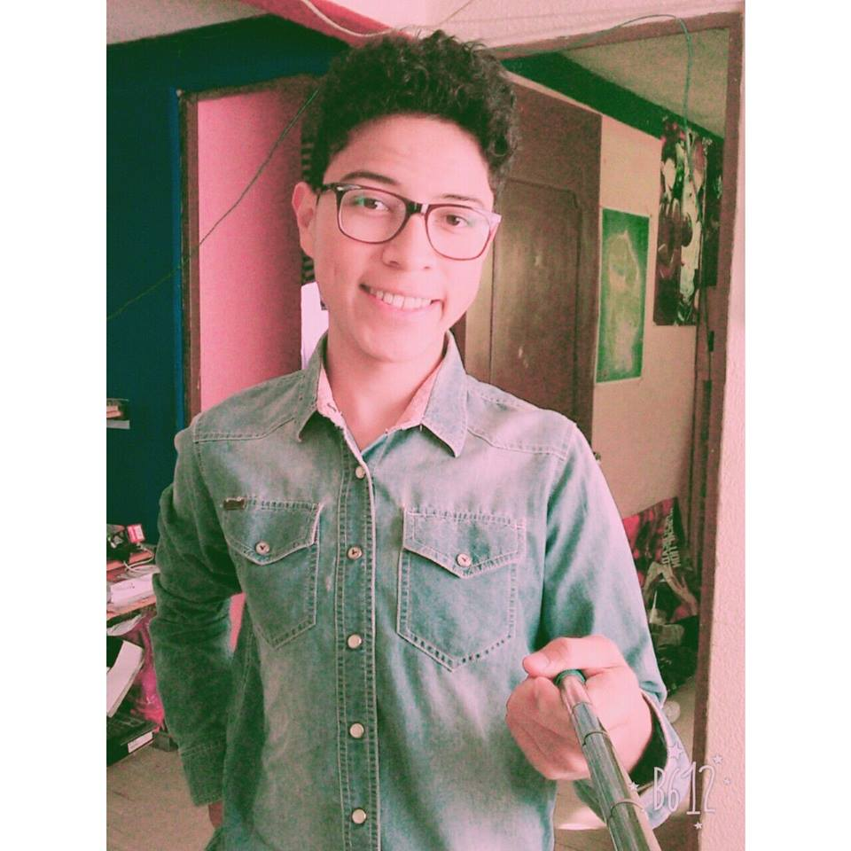

Orientado a Ecologia y Diseño Web
Erick Gonzalez
Esta pagina fue usada como un preoycto especifico de programacion Orientada a Ecologia por opinion mia y la de un compañero, Soy estudiante de programacion en Cecytem Planetel Tultitlan, estudiando en este semestre "HTML",Soy un joven de 18 años que se quiere dedicar especialmente a Desing web, Java Scrip, Bootstrap, CSS3, etc. Esta pagina como se los dije anteriormente es para Ecologia .La materia nos la imparte el maestro Francisco Buenaventura Gonzalez .Y el que especifico este proyecto fue Adrian Villamares Martinez profesor de Aplicaciones Web y mas...Actualmente este trabjo fue realizado por un gusto enorme a la programacion, y porque me gusta, soy promotor totalmente de la Ecologia y la Ciencia . 
Giovanni Rodriguez
Me presento, mi nombre es Giovanni Rodriguez Muñoz y fui creador y diseñador de la pagina (acompañado de mi compañero Erick) que acabas de ver. Tengo 17 años y estudio en Cecytem plantel Tultilan La página que acabas de ver fue un proyecto realizado en Html y CSS para la materia "Desarrolla Aplicaciones Web" , y fue hecha sobre la materia de Ecología ya que creimos que la información de esta materia era bastante extensa y en efecto, nos enriquecimos de información que fue de gran ayuda para la realización de la página web. Me gusta mucho comer y ver videos en Youtube, jugar, salir a la calle, etc, etc... Mi sueño es ser cientifico o alguien que alguna vez marque parte de la diferencia en este mundo. Nos veremos en otra practica, que la suerte les acompañe. 
Informacion de la pagina
Este proyecto fue hecho con HTML5 , CSS3 y un poco de Java Scrip , Bootstrap . La pagina fue hecha por dos estudiantes de programacion, Cecytem Planetel Tultitlan.
La informacion de la pagina fue sacada por articulos de Profesor de Ecologia, la revista Como ves? y Wikipedia, y otras paginas de ecologia. La pagina fue maquetada por tablas en unas paginas de las principales, y otras maquetando por contenedores.
Upppss!..Parece que ya no hay nada por aqui..Te diremos cuando habra algo nuevo.
^.^
Corpyrigth © Derechos de autor MiKe and ZaiKo 2018